🌏Welcome to Antarctica
Antarctica is the coldest, driest, and windiest continent, almost entirely covered by ice, which holds about 70% of the world’s fresh water.
It has no permanent residents, but it hosts international scientific research stations where scientists study climate, wildlife, and glaciology.
The continent is governed by the Antarctic Treaty System, which preserves it for peaceful research and bans military activity and mineral mining.
Despite its harsh environment, Antarctica is home to unique wildlife, including penguins, seals, and various seabirds.
The continent experiences extreme seasonal variations, with six months of continuous daylight (summer) followed by six months of darkness (winter).
Antarctica plays a critical role in regulating the Earth’s climate and sea levels, making it a key area of study in global climate research.
The continent’s isolation and pristine environment make it a natural laboratory for understanding the impacts of climate change and human activity on the planet.
🌏Day 1: Introduction to Antarctica
Welcome to the first day of our Antarctic adventure! Antarctica, the southernmost continent, is a land of extremes. It is the coldest, driest, and windiest continent on Earth. Covered almost entirely by an ice sheet, Antarctica holds about 70% of the world’s fresh water.
Antarctica is not owned by any one country, and its unique status is governed by the Antarctic Treaty, which promotes peaceful scientific exploration and bans military activity on the continent. Let’s begin our journey by exploring some of the most famous landmarks of Antarctica.
🌏Landmarks of Antarctica
South Pole
The South Pole is the most iconic landmark in Antarctica. It is the southernmost point on Earth, and the site is marked by a ceremonial pole surrounded by the flags of the original Antarctic Treaty signatories. The Amundsen-Scott South Pole Station, a U.S. research facility, is located here, and it plays a crucial role in scientific research on climate, astronomy, and glaciology.
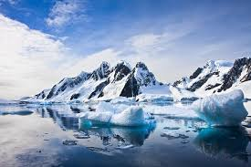Mount Erebus
Mount Erebus is an active volcano located on Ross Island. It is the second-highest volcano in Antarctica and one of the few with a persistent lava lake. The mountain was discovered by Sir James Clark Ross in 1841 and remains a site of interest for volcanologists and geologists.
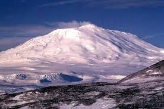Ross Ice Shelf
The Ross Ice Shelf is the largest ice shelf in Antarctica, extending over 500,000 square kilometers. It plays a critical role in the stability of the Antarctic ice sheet. Scientists study this area to understand how ice sheets contribute to sea level rise and global climate patterns.
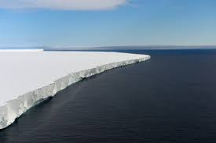🌏Flags of Antarctic Research Nations
| Country | Flag | Research Station |
|---|---|---|
| USA | McMurdo Station | |
| New Zealand |  |
Scott Base |
| UK |  |
Rothera Research Station |
| France Italy |
  |
Concordia Station |
🌏Did you know?
❄️ Did you know that the South Pole has six months of daylight followed by six months of darkness? This phenomenon occurs because of the tilt of the Earth's axis.
🌋 Did you know that Mount Erebus is the southernmost active volcano on Earth? It has been continuously erupting since 1972, making it one of the most active volcanoes in the world.
🧊 Did you know that the Ross Ice Shelf is about the size of France? It’s the largest ice shelf in Antarctica, and it’s crucial for understanding ice dynamics and sea-level rise.
💧 Did you know that Antarctica's ice sheet contains about 60% of the world's freshwater? If it were to melt completely, it could raise global sea levels by about 60 meters (200 feet).
🏔️ Did you know that Antarctica is the only continent without a native human population? The harsh conditions make it impossible for permanent human settlement.
🌏Day 2: Antarctic Wildlife
Antarctica is known for its extreme environment, but even in these harsh conditions, life finds a way. The continent is home to a wide variety of wildlife, especially in the surrounding Southern Ocean. These animals are uniquely adapted to the cold and often rely on the ocean for their survival.
Today, we’ll explore some of the most iconic animals that call Antarctica home, including penguins, seals, and whales.
Penguins
Penguins are the most recognizable animals in Antarctica. These flightless birds have adapted to the cold with thick layers of blubber and dense feathers. The Emperor penguin is the largest and perhaps the most well-known species. They are famous for their long treks across the ice during the harsh Antarctic winter to breed.
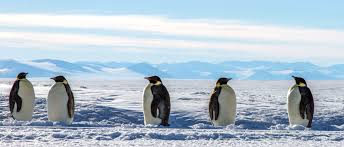Adelie penguins are another common species found along the Antarctic coast. They build their nests from stones and are known for their loud, social colonies.
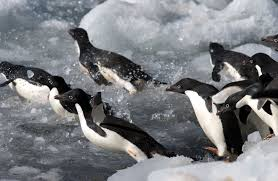Seals
Seals are another important part of the Antarctic ecosystem. The Weddell seal is known for its deep dives under the ice in search of fish. They can hold their breath for over an hour, allowing them to explore under the thick sea ice.
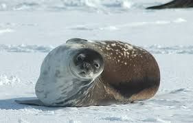Leopard seals are the top predators in the Antarctic waters. They have a powerful bite and primarily feed on penguins and other seals. Their long, slender bodies allow them to be agile hunters.
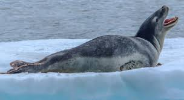Whales
Many whale species, such as the blue whale and humpback whale, migrate to the Antarctic waters during the summer months to feed on the abundant krill. These gentle giants can be seen breaching the surface, often in groups, as they gorge on the rich nutrients of the Southern Ocean.

Orcas, or killer whales, are also found in these waters. They are highly intelligent and social animals, often hunting in packs to take down larger prey.
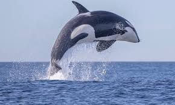🌏Did you know?
🐧 Did you know that Emperor penguins are the tallest and heaviest of all living penguin species? They can stand up to 1.2 meters (4 feet) tall and weigh up to 45 kilograms (100 pounds).
🦭 Did you know that Weddell seals can hold their breath for up to 80 minutes? This allows them to dive deep under the ice in search of food.
🐋 Did you know that the blue whale, found in Antarctic waters, is the largest animal to have ever existed? It can grow up to 30 meters (98 feet) in length and weigh as much as 200 tons.
❄️ Did you know that krill, tiny shrimp-like creatures, are the cornerstone of the Antarctic food web? They are a primary food source for many species, including whales, seals, and penguins.
🦅 Did you know that the wandering albatross, often seen around Antarctica, has the largest wingspan of any bird, reaching up to 3.5 meters (11.5 feet)?
Now You're Ready to Take the Quiz!
Head over to the home page to get started with your first quiz! Or you can clik this button just below
🌏Day 3: Antarctic Research
Antarctica is a natural laboratory, offering unique opportunities for scientific research. The continent is governed by the Antarctic Treaty, which ensures that the region remains a zone of peace and science. Research conducted here ranges from studying the Earth's climate history to exploring the stars in some of the clearest skies on the planet.
Today, we’ll explore some of the key areas of research in Antarctica, including climate science, glaciology, and astronomy.
🌏Climate Research
One of the most important research activities in Antarctica is the study of climate change. Scientists drill ice cores to retrieve samples of ice that are thousands of years old. These ice cores contain trapped air bubbles that give us a snapshot of the Earth's past climate.
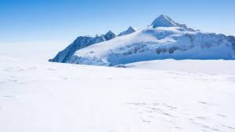By analyzing the layers of ice, researchers can understand how the climate has changed over millennia and predict future climate patterns. This research is crucial for understanding global warming and its potential impact on sea levels and ecosystems worldwide.
Glaciology
Glaciology is the study of glaciers and ice sheets. In Antarctica, researchers focus on understanding the dynamics of the ice sheet, which holds the majority of the Earth's freshwater. They study how the ice flows, how it melts, and how it interacts with the ocean.
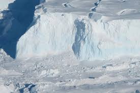The findings from these studies help predict future sea level rise, which could have significant implications for coastal communities around the world. Understanding the stability of the Antarctic ice sheet is crucial for preparing for the impacts of climate change.
Astronomy
Antarctica's clear, cold air and long winter nights make it an excellent location for astronomical observations. Telescopes at Antarctic research stations are used to study cosmic microwave background radiation, which provides clues about the origins of the universe.
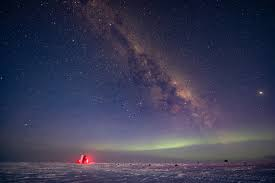The high altitude and dry conditions minimize atmospheric interference, allowing for clearer images of celestial objects. This research helps scientists understand the formation of galaxies, stars, and the evolution of the universe.
🌏Did you know?
🔬 Did you know that ice cores drilled from Antarctica provide a record of Earth’s climate going back hundreds of thousands of years? They are crucial for studying past climate changes.
🛰️ Did you know that Antarctica is a prime location for space research? Its clear, cold skies make it an ideal spot for studying the stars and other celestial objects.
🌡️ Did you know that the coldest temperature ever recorded on Earth was in Antarctica? It was -128.6°F (-89.2°C) at the Soviet Union's Vostok Station in 1983.
🧪 Did you know that scientists in Antarctica are studying extremophiles, organisms that live in extreme conditions, which could provide insights into life on other planets?
🌍 Did you know that studying Antarctica's ice sheets is critical for understanding global sea-level rise? Even small changes in ice volume can have significant impacts worldwide.
🌏summary: Reflection on Our Journey
As we come to the end of our exploration of Antarctica, it's time to reflect on what we've learned over the past three days. Antarctica is a continent of extremes, with its icy landscapes, unique wildlife, and crucial scientific research. Each aspect of our journey has highlighted the importance of this remote and largely untouched region.
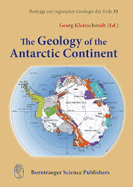Key Takeaways
- Landmarks: We started by exploring the iconic landmarks of Antarctica, including the South Pole, Mount Erebus, and the Ross Ice Shelf. These sites are not only geographical wonders but also key locations for scientific research.
- Wildlife: We then delved into the diverse and resilient wildlife that calls Antarctica home. From Emperor penguins to Weddell seals and blue whales, these animals have adapted to survive in one of the harshest environments on Earth.
- Scientific Research: Finally, we explored the cutting-edge scientific research being conducted on the continent. From studying ancient ice cores to observing the stars, the research in Antarctica is vital for understanding our planet and its future.
🌏Flags of Antarctic Research Nations
| Country | Flag | Research Station |
|---|---|---|
| USA | McMurdo Station |
The Importance of Antarctica
Antarctica may seem distant and isolated, but its significance cannot be overstated. The continent plays a crucial role in regulating the Earth's climate, and the research conducted here has global implications. As the planet warms, understanding Antarctica's ice sheets and ecosystems becomes even more critical.
Moreover, Antarctica is a symbol of international cooperation. The Antarctic Treaty is a rare example of countries coming together to preserve a region for peaceful scientific purposes, setting an important precedent for future global collaborations.
🌏Did you know?
📜 Did you know that the Antarctic Treaty, signed in 1959, was the first arms control agreement established during the Cold War? It ensures that Antarctica is used for peaceful purposes and scientific research only.
🌍 Did you know that Antarctica influences global weather patterns? The cold air from Antarctica helps drive the circulation of the Earth’s atmosphere.
🧊 Did you know that ice shelves, like the Ross Ice Shelf, act as a buffer, slowing the flow of glaciers into the ocean? This helps stabilize global sea levels.
🛰️ Did you know that the unique conditions in Antarctica make it an excellent place for testing space exploration technologies? The isolation and extreme environment are similar to conditions on other planets.
❄️ Did you know that Antarctica is the driest continent on Earth? Despite being covered in ice, the continent receives very little precipitation, qualifying it as a polar desert.
🔬 Did you know that ice cores drilled from Antarctica provide a record of Earth’s climate going back hundreds of thousands of years? They are crucial for studying past climate changes.
🛰️ Did you know that Antarctica is a prime location for space research? Its clear, cold skies make it an ideal spot for studying the stars and other celestial objects.
💁🏼♂️Conclusion!
Our journey through Antarctica has been one of discovery and reflection. As we leave this icy continent, let us remember its importance to our world and the need to protect and preserve it for future generations. Thank you for joining us on this adventure, and we hope you have gained a deeper understanding and appreciation for the wonders of Antarctica.
You're Ready to Take the Second Quiz!
Head over to the home page to get started with your Second quiz as well as General test and Exam! just click button below to start by quiz 2